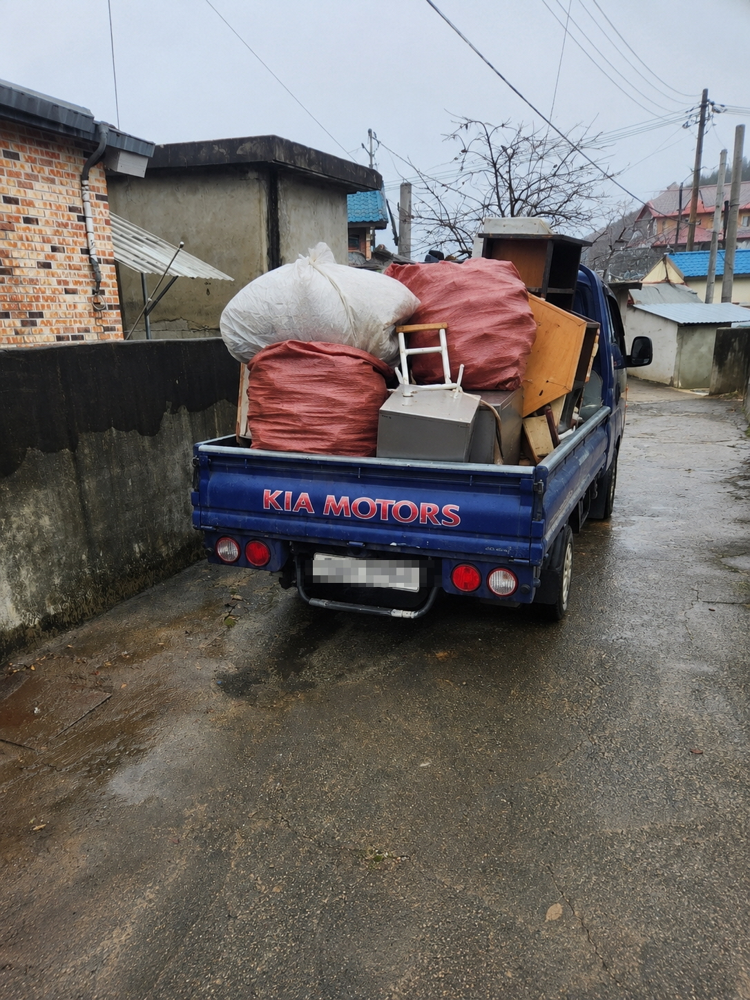
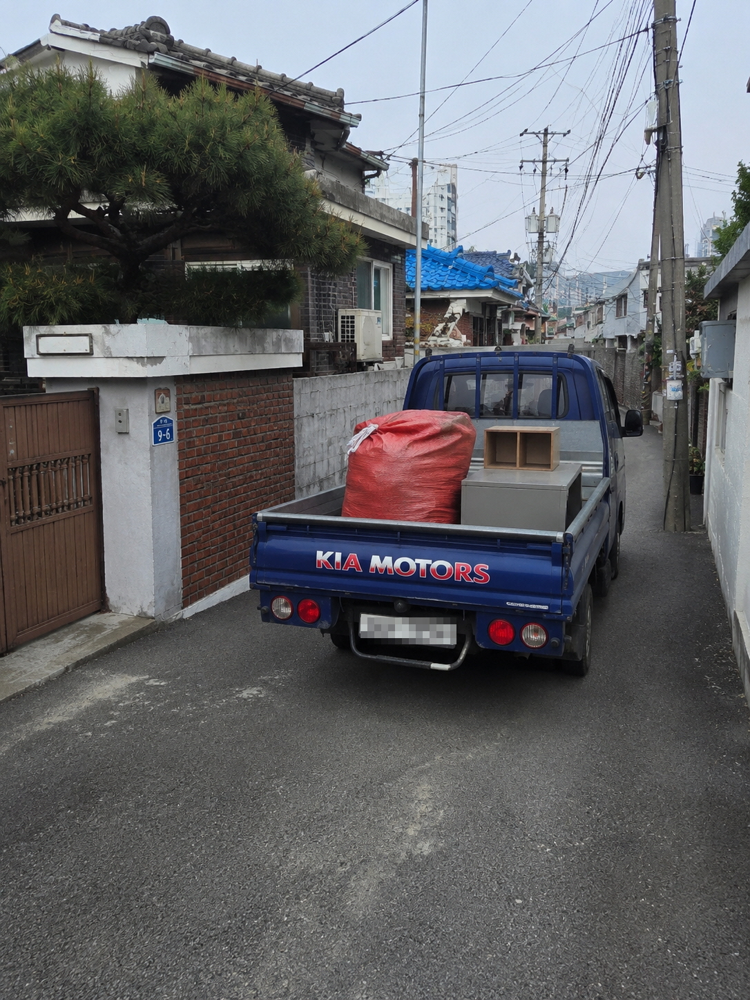

쓰레기집청소
혼자 정리하기 어려운 주거공간의 폐기물과 생활쓰레기를 단계적으로 정리합니다.
서울 · 경기 폐기물처리 30만원부터
서울·경기 전 지역 현장의 폐기물 양과 이동 동선을 확인한 뒤, 쓰레기집청소·빈집정리·가정·이사·폐업폐기물처리까지 필요한 범위만 안내합니다.
서비스 안내
작업 범위를 과하게 잡지 않고, 현장에 필요한 정리부터 반출까지 안내합니다.
혼자 정리하기 어려운 주거공간의 폐기물과 생활쓰레기를 단계적으로 정리합니다.
오래 비어 있던 집의 가구, 생활폐기물, 잔짐을 한 번에 정리합니다.
가구, 생활용품, 잡동사니, 오래된 짐까지 현장 상황에 맞춰 정리합니다.
이사 전후 남은 침대, 장롱, 책상, 생활용품을 빠르게 분류하고 반출합니다.
사무실, 매장, 창고 정리 후 남은 집기와 폐기물을 처리합니다.
비용 안내
30만원부터
정확한 비용은 폐기물 양, 차량 대수, 층수, 엘리베이터 유무, 작업 인원에 따라 달라질 수 있습니다.
비용 기준
같은 양의 폐기물이라도 현장 조건에 따라 시간과 비용이 달라질 수 있습니다.
1톤 차량 1대 분량인지, 2대 이상인지에 따라 비용 차이가 발생합니다.
고층 건물, 계단 작업, 엘리베이터 사용 제한 여부에 따라 작업 인원이 달라질 수 있습니다.
침대, 장롱, 소파, 책상처럼 부피가 큰 물품은 분해와 반출 시간이 더 필요할 수 있습니다.
주차 공간, 골목 진입, 건물 앞 정차 가능 여부에 따라 작업 시간이 달라질 수 있습니다.
폐기물처리는 단순히 물건을 밖으로 옮기는 작업이 아닙니다. 아파트, 빌라, 오피스텔, 단독주택, 상가처럼 공간 구조가 다르고, 엘리베이터 사용 여부나 차량 진입 여부에 따라 작업 방식이 달라집니다.
올바른 폐기물처리는 폐기물의 종류와 양, 반출 동선, 작업 인원, 차량 진입 가능 여부를 함께 확인해 현장 상황에 맞는 방법으로 진행합니다. 특히 가정폐기물과 이사폐기물, 빈집정리, 쓰레기집청소는 한 현장 안에서도 분류가 필요한 경우가 많기 때문에 상담 단계에서 사진과 주소를 함께 확인하는 것이 좋습니다.
INFORMATION
검색과 상담에 도움이 되도록 폐기물처리 관련 핵심 정보를 정리했습니다.
폐기물처리는 가정·이사·빈집·폐업 현장에서 발생한 가구, 가전, 생활용품, 잔짐을 분류하고 운반·상차·반출하는 작업입니다. 서울 25개 구와 경기 31개 시·군에서 아파트, 빌라, 오피스텔, 단독주택, 상가 등 공간 구조와 차량 진입 여부에 따라 작업 방식이 달라집니다. 올바른 폐기물처리는 현장 동선과 분리 정리를 우선 확인합니다.
쓰레기집청소는 장기간 생활폐기물이 쌓여 출입·청소·임대·매각이 어려운 상황에서 필요합니다. 같은 면적이라도 층수, 엘리베이터, 대형 가구 포함 여부, 악취·오염 정도에 따라 작업 범위가 달라지므로 사진과 주소를 함께 남기시면 상담이 빠릅니다.
빈집정리는 공실 매각·임대 전 남은 가구·가전·잡동사니를 한 번에 정리하는 작업입니다. 이사폐기물처리는 이사 전후 버릴 가구와 생활용품이 많을 때, 가정폐기물처리는 대형 가전·가구 교체 후 반출이 필요할 때 문의가 많습니다. 현장 사진으로 물량과 동선을 확인하면 비용 안내가 수월합니다.
가게·사무실·창고 폐업 후 남은 집기, 진열대, 사무용품, 잔짐을 반출하는 작업입니다. 상가·오피스는 야간 작업이나 차량 진입 시간 제한이 있는 경우가 있어, 상담 시 건물 조건을 함께 알려주시면 좋습니다.
일반폐기물은 30만원부터 시작하며, 폐기물의 양·종류, 층수, 엘리베이터 유무, 차량 진입, 작업 인원에 따라 달라집니다. 수원·성남·고양·용인·부천·안양 등 경기 지역과 강남·송파·마포·노원 등 서울 지역 모두 사진 상담 후 범위 안내가 가능합니다.
폐기물처리는 버릴 물건·짐 반출이 중심이고, 유품정리는 고인의 물품 분류·보관이 중심입니다. 고인 유품 정리가 필요하다면 올바른 유품정리를, 두 서비스 통합 안내는 올바른수거에서 확인하세요.
진행 과정
주소, 폐기물 종류, 대략적인 양을 확인합니다.
차량 진입, 층수, 엘리베이터 여부를 확인합니다.
가구, 생활폐기물, 잔짐을 작업 순서에 맞게 정리합니다.
폐기물 반출 후 현장을 깔끔하게 정돈합니다.
현장사진
메인과 지역페이지는 전·후 사진 번호를 맞추고, 작업 중 사진만 현장 흐름에 맞게 배치합니다.


고객후기
★★★★★이사 후 남은 가구와 생활폐기물이 많았는데 비용 기준을 먼저 안내받아 편했습니다.
수원 고객님
★★★★★오래 방치된 짐이 많아 막막했는데 분리부터 반출까지 순서대로 진행해주셔서 좋았습니다.
성남 고객님
★★★★★폐업 후 남은 집기와 잡동사니가 많았는데 현장 확인 후 빠르게 정리해주셨습니다.
고양 고객님
★★★★★엘리베이터 사용이 어려운 현장이었는데 작업 순서를 잘 잡아주셔서 부담이 줄었습니다.
용인 고객님
자주 묻는 질문
기본 비용은 30만원부터이며 폐기물 양, 차량 대수, 작업 인원, 층수와 엘리베이터 여부에 따라 달라질 수 있습니다.
가능합니다. 현장 사진과 주소, 엘리베이터 여부를 알려주시면 대략적인 범위와 비용 안내가 더 정확해집니다.
대형가구, 생활용품, 이사 후 남은 짐, 오래 방치된 폐기물까지 현장 상황에 맞춰 상담할 수 있습니다.
가능합니다. 생활폐기물 정리, 포장, 운반, 상차까지 현장 상황에 맞춰 진행합니다.